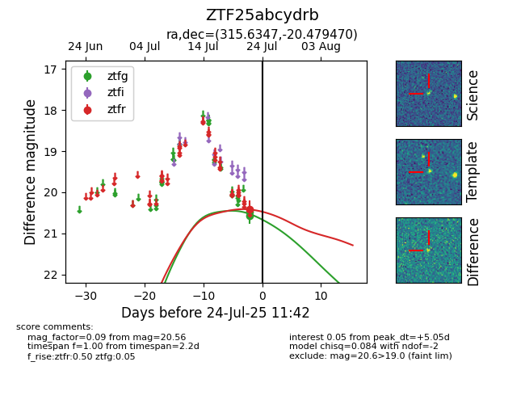

Target ZTF25abcydrb at 2025-07-24 11:42, see:
FINK: fink-portal.org/ZTF25abcydrb
Lasair: lasair-ztf.lsst.ac.uk/objects/ZTF25abcydrb
ALeRCE: alerce.online/object/ZTF25abcydrb
alt names
ZTF25abcydrb (ztf,fink)
coordinates:
equatorial (ra, dec) = (315.6347,-20.47947)
galactic (l, b) = (27.1225,-37.65288)
photometry
last ztfg=20.56, ztfr=20.42
2 ztfg, 1 ztfr detections
